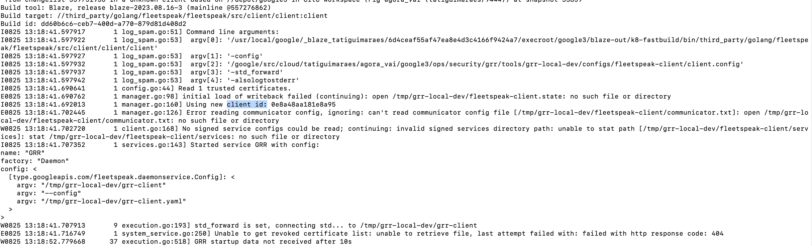
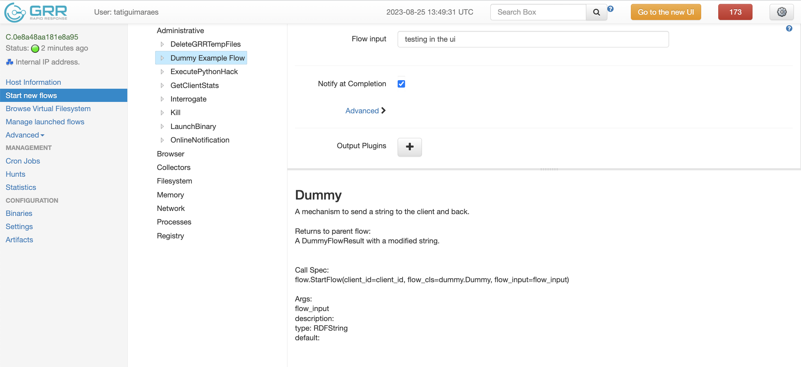
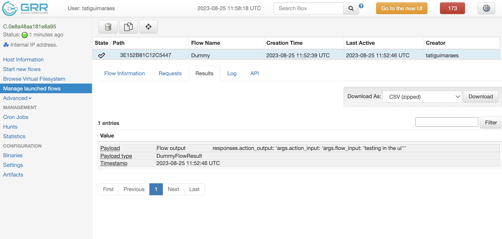

This code lab assumes that you
You can follow the Developing GRR guide to learn what you should install on your machine and how to run GRR locally.
The code you'll be touching is mostly Python. You don't need to be an expert to follow along, but if you want more background you can check out one of many tutorials online.
The input and output of your Flow are its public interface. The input is provided by the user (via the API or the UI) when starting the Flow. The output is what will be provided back to them. Progress is an optional message that gives users some feedback of how much the Flow has processed so far - this is more important for Flows that take longer to process, or are running something multiple times (e.g. "collected 1 out of 10 files").
You'll need to define a .proto and an equivalent RDFValue for each. Let's go through an example.
.protoFirst, write the .proto messages for your new Flow.
https://github.com/google/grr/blob/master/grr/proto/grr_response_proto/dummy.proto
message DummyArgs {
optional string flow_input = 1;
}
message DummyFlowResult {
optional string flow_output = 1;
}
RDFValue classesNext, let's add the corresponding RDFValue classes. They inherit from RDFProtoStruct, and must have the protobuf property set. If your proto depends on other RDFValues (e.g. other protos), you should add them to the list of dependencies in rdf_deps (example).
https://github.com/google/grr/blob/master/grr/core/grr_response_core/lib/rdfvalues/dummy.py
class DummyArgs(rdf_structs.RDFProtoStruct):
"""Request for Dummy action."""
protobuf = dummy_pb2.DummyArgs
rdf_deps = []
class DummyFlowResult(rdf_structs.RDFProtoStruct):
"""Result for Dummy action."""
protobuf = dummy_pb2.DummyFlowResult
rdf_deps = []
In this case, we're defining them close to where the Flow will eventually live. It'd also be ok to define them in the same file where the Client Action RDFValues were defined (see Adding Client Actions).
Flows are classes that inherit from FlowBase. The class must override:
args_type and result_types properties: these are the public interface for your Flow - the input provided from the user to your Flow, and what the Flow will output back to them. An important detail here is that this value must be an RDFValue.Start method: this is the entrypoint for your Flow (the first state that will be executed). Flows are asynchronous, meaning they often do some work; then have to wait for either the Client or another Flow to do some work before they can continue. In our example Flow below, the Start method simply calls a Client Action. Then, after the Client Action finishes and all the data has been received back, GRR starts processing the next_state class method (please refer to GRR Flows for more details).Optionally, there are some properties that can influence GRR's UI (the old and the new). In our case, we're filling these out to help us see it later:
friendly_name is displayed as the Flow name if available.category is in which group of Flows it will be shown (together with others).behaviours is in which "user UI mode" it will be shown. Users can configure how they see the UI (basic, advanced, debug). Since we don't want this to crowd the UI unecessarily, here we're adding it to DEBUG.The FlowBase base class has many other methods of interest. Here are the most important ones to be aware of:
GetProgress: If you've defined a <FlowName>Progress message, you can return fill it out based on partial/full data here to report it.Log: Registers a message to the Flow Log. This is super useful for debugging, but not really read if everything goes smoothly.GetFilesArchiveMappings: This one is super useful for users to later download files from your Flow. If the Flow collects file contents, consider implementing this so it returns the contents of all relevant files to the user when downloading results.SendReply: Sends a reply (output(s) of your Flow).End: This is the last state executed by the Flow before it completes. If you need something done at the end, consider adding it here.Whith all of that in mind, let's write our Dummy Flow. When it starts, it will simply read the input string, modify it, and send it to the Client Action. When the Client Action finishes, we'll also append to the string and return our Flow results.
https://github.com/google/grr/blob/master/grr/server/grr_response_server/flows/general/dummy.py
class Dummy(flow_base.FlowBase):
"""A mechanism to send a string to the client and back.
Returns to parent Flow:
A DummyFlowResult with a modified string.
"""
friendly_name = "Dummy Example Flow"
category = "/Administrative/"
behaviours = flow_base.BEHAVIOUR_DEBUG
args_type = DummyArgs
result_types = (DummyFlowResult,)
def Start(self):
"""Schedules the action in the client (Dummy ClientAction)."""
if not self.args.flow_input:
raise ValueError("args.flow_input is empty, cannot proceed!")
request = rdf_dummy.DummyRequest(
action_input=f"args.flow_input: '{self.args.flow_input}'"
)
self.CallClient(
server_stubs.Dummy,
request,
next_state=self.ReceiveActionOutput.__name__,
)
self.Log("Finished Start.")
def ReceiveActionOutput(
self, responses: flow_responses.Responses[rdf_dummy.DummyResult]
):
"""Receives the action output and processes it."""
# Checks the "Status" of the action, attaching information to the Flow.
if not responses.success:
raise flow_base.FlowError(responses.status)
if len(responses) != 1:
raise flow_base.FlowError(
"Oops, something weird happened. Expected a single response, but"
f" got {list(responses)}"
)
result = DummyFlowResult(
flow_output=(
f"responses.action_output: '{list(responses)[0].action_output}'"
)
)
self.SendReply(result)
self.Log("Finished ReceiveActionOutput.")
Here's an example test for our very simple Flow. We are aiming at covering the different scenarios that can happen, where things can go wrong, and what we expect to happen in these cases.
In the first test, we're testing the happy path. Here, the Flow has an input string, provides it to the mocked client, the client returns as we expect and we test the Flow result.
On the second test, we're testing the Start method argument validation. Here, it shouldn't matter which client action or mock you provide, as the client action will never be called.
The third test uses a client mock to test the next_state function, and that it fails under the right conditions.
https://github.com/google/grr/blob/master/grr/server/grr_response_server/flows/general/dummy_test.py
# Mocks the Dummy Client Action.
class DummyActionReturnsOnce(actions.ActionPlugin):
"""Sends a single Reply (like real action would)."""
in_rdfvalue = rdf_dummy.DummyRequest
out_rdfvalues = [rdf_dummy.DummyResult]
def Run(self, args: rdf_dummy.DummyRequest) -> None:
self.SendReply(rdf_dummy.DummyResult(action_output="single"))
# Mocks the Dummy Client Action, sending two replies.
class DummyActionReturnsTwice(actions.ActionPlugin):
"""Sends more than one Reply."""
in_rdfvalue = rdf_dummy.DummyRequest
out_rdfvalues = [rdf_dummy.DummyResult]
def Run(self, args: rdf_dummy.DummyRequest) -> None:
self.SendReply(rdf_dummy.DummyResult(action_output="first"))
self.SendReply(rdf_dummy.DummyResult(action_output="second"))
class DummyTest(flow_test_lib.FlowTestsBaseclass):
"""Test the Dummy Flow."""
def setUp(self):
super().setUp()
# We need a Client where we can execute the Flow/call the Action.
self.client_id = self.SetupClient(0)
def testHasInput(self):
"""Test that the Dummy Flow works."""
flow_id = flow_test_lib.TestFlowHelper(
dummy.Dummy.__name__,
# Uses mocked implementation.
action_mocks.ActionMock.With({"Dummy": DummyActionReturnsOnce}),
creator=self.test_username,
client_id=self.client_id,
# Flow arguments
flow_input="batata",
)
results = flow_test_lib.GetFlowResults(self.client_id, flow_id)
self.assertLen(results, 1)
self.assertEqual(
"responses.action_output: 'single'",
results[0].flow_output,
)
def testFailsIfEmptyFlowInput(self):
"""Test that the Dummy Flow fails when there's no input."""
with self.assertRaisesRegex(
RuntimeError, r"args.flow_input is empty, cannot proceed!"
):
flow_test_lib.TestFlowHelper(
dummy.Dummy.__name__,
# Should fail before calling the client
None,
creator=self.test_username,
client_id=self.client_id,
# Flow arguments are empty
)
def testFailsIfMultipleActionOutputs(self):
"""Test that the Dummy Flow fails when there's no input."""
with self.assertRaisesRegex(
RuntimeError, r".*Oops, something weird happened.*"
):
flow_test_lib.TestFlowHelper(
dummy.Dummy.__name__,
# Uses mocked implementation.
action_mocks.ActionMock.With({"Dummy": DummyActionReturnsTwice}),
creator=self.test_username,
client_id=self.client_id,
# Flow arguments
flow_input="banana",
)
def main(argv):
test_lib.main(argv)
if __name__ == "__main__":
app.run(main)
Now that we have an implemented and tested action, we can register it so it is available to be called! Hooray!
For that you need to add it to the following places.
To registry_init to be used regularly.
from grr_response_server.flows.general import dummy
To utils to be used by the api client.
https://github.com/google/grr/blob/master/api_client/python/grr_api_client/utils.py
from grr_response_proto import dummy_pb2
When a new Flow is registered, you will also need to add the new protos to the UI code. You can do that by running:
GRR also has end to end tests.
In your test functions, you can use RunFlowAndWait to run your Flow with the arguments you want, and then consult/test Flow results and other properties such as whether logs were written or not. Here's an example end to end test for our Dummy Flow.
https://github.com/google/grr/blob/master/grr/test/grr_response_test/end_to_end_tests/tests/dummy.py
#!/usr/bin/env python
"""End to end tests for GRR dummy example Flow."""
from grr_response_test.end_to_end_tests import test_base
class TestDummyUnix(test_base.EndToEndTest):
"""TestDummy test."""
platforms = [
test_base.EndToEndTest.Platform.LINUX,
test_base.EndToEndTest.Platform.DARWIN,
]
def runTest(self):
args = self.grr_api.types.CreateFlowArgs(flow_name="Dummy")
args.flow_input = "abc, abc, toda criança tem que ler e escrever"
f = self.RunFlowAndWait("Dummy", args=args)
results = list(f.ListResults())
self.assertTrue(results)
self.assertIn("abc, abc, toda criança tem que ler e escrever", results)
self.assertIn("flow_input", results)
self.assertIn("action_input", results)
self.assertIn("action_output", results)
logs = "\n".join(l.log_message for l in f.ListLogs())
self.assertIn("Finished Start.", logs)
self.assertIn("Finished ReceiveActionOutput.", logs)
self.assertTrue(False)
class TestDummyWindows(test_base.EndToEndTest):
"""TestDummy test for Windows."""
platforms = [test_base.EndToEndTest.Platform.WINDOWS]
def runTest(self):
args = self.grr_api.types.CreateFlowArgs(flow_name="Dummy")
args.flow_input = "abc, abc, toda criança tem que ler e escrever"
f = self.RunFlowAndWait("Dummy", args=args)
results = list(f.ListResults())
self.assertTrue(results)
self.assertIn("abc, abc, toda criança tem que ler e escrever", results)
self.assertIn("flow_input", results)
self.assertIn("action_input", results)
self.assertIn("action_output", results)
self.assertIn("WIN", results)
logs = "\n".join(l.log_message for l in f.ListLogs())
self.assertIn("Finished Start.", logs)
self.assertIn("Finished ReceiveActionOutput.", logs)
self.assertTrue(False)
That's it, your Flow is complete! Now you can trigger it locally.
client id: Start new flows. Your Flow should be listed there. Manage launched flows. 